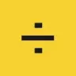
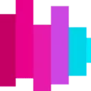
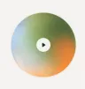
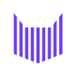
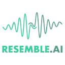
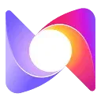
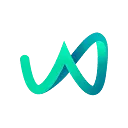

МолекулаАгрегаторы нейросетей
Молекула объединяет модели для текстов, изображений, видео и музыки. В одном аккаунте можно подобрать инструмент под этап работы, сохранить инструкции проекта и использовать готовые роли.
К задаче в МолекулеКлонирование голоса: Получите разрешение владельца голоса и подготовьте чистую запись. Сравните сходство и условия дальнейшего использования.
Сформулируйте желаемую манеру чтения для учебного видео через темп, интонацию и паузы. Подготовьте дикторский бриф по собственному сценарию; он описывает нужную подачу и не предполагает подтверждённого создания копии голоса конкретного человека.
Подготовь дикторский бриф для объяснения работы кофемашины: спокойная разговорная подача, отчётливые названия кнопок, пауза перед предупреждением. Опиши темп и интонацию без имитации конкретного человека.

Молекула объединяет модели для текстов, изображений, видео и музыки. В одном аккаунте можно подобрать инструмент под этап работы, сохранить инструкции проекта и использовать готовые роли.
К задаче в МолекулеAPIHOST.RU используют, чтобы подготавливать озвучку текстового материала. Ещё одно направление работы: собирать видеосцену по описанию или визуальному исходнику.
Dubly.AI рассчитан на задачи, где нужно собирать видеосцену по описанию или визуальному исходнику. Ещё одно направление работы: готовить видеоматериалы для публикации.
«Neets AI» помогает соединить повторяемые рабочие действия. «Neets AI» также помогает упорядочить задачи проекта.
«Replay.io» разбирает данные для рабочего анализа.
«Applio» позволяет создавать воспроизведение голоса.
Silero TTS рассчитан на задачи, где нужно подготавливать озвучку текстового материала. Ещё одно направление работы: работать с синтезированной голосовой партией.
«VeraVoice» получает речевую запись из текста.
В инструменте «Verbatik» можно готовить музыкальную композицию по заданию. Ещё одно направление работы: собирать видеосцену по описанию или визуальному исходнику.
iMyFone MagicMic меняет голос в реальном времени и предлагает звуковые эффекты. В описании названа работа с Discord, Zoom и играми. Программа предназначена для оформления звучащей речи в ходе общения, сочетая выбранное преобразование голоса с дополнительными звуками в подключённом пользовательском окружении.
«OpenVoice AI» представлен в разделе «Аудио (голос и музыка)». При выборе проверьте нужную операцию и условия работы с результатом.
Fish Audio используют, чтобы подготавливать озвучку текстового материала. Ещё одно направление работы: работать с синтезированной голосовой партией.
В инструменте «Kits AI» можно готовить музыкальную композицию по заданию. Ещё одно направление работы: работать с синтезированной голосовой партией.

LALAL.AI разделяет вокал и инструментальные составляющие аудио с помощью ИИ. Обработка также предусмотрена для звуковых дорожек видео, а отдельные средства направлены на удаление помех и нежелательных звуков. Для включения этих операций в другие сервисы у продукта описан программный интерфейс.
Altered Studio используют для задачи: готовить ответы на обращения клиентов. Ещё одно направление работы: работать с синтезированной голосовой партией.
«BasedLabs AI» готовит визуальные материалы по заданию. «BasedLabs AI» создаёт видеоматериал по заданию.
«CreataAI» позволяет создавать воспроизведение голоса. «CreataAI» также готовит визуальные материалы по заданию.
Hume AI относится к инструментам, которые помогают обрабатывать голосовые обращения. Ещё одно направление работы: работать с синтезированной голосовой партией.
В инструменте «Voice.ai» можно связывать действия в автоматизированный процесс. Ещё одно направление работы: обрабатывать голосовые обращения.

Звукограм преобразует текст в речь с помощью нейроголосов, включая варианты на русском языке. В наборе также описаны расшифровка аудио и видео, озвучивание субтитров и извлечение звуковой дорожки из YouTube. Дополняют работу библиотеки музыкальных материалов и звуковых эффектов для подготовки медиапроектов.
Inworld AI помогает разработчикам создавать ИИ-персонажей для приложений, игр и виртуальных пространств. Настройка охватывает знания, память и поведение в повествовании, а также разные формы взаимодействия. Инструменты предназначены для встраивания персонажа в проект, где его ответы должны учитывать заданный характер и контекст.

ElevenLabs превращает текст в речь и предлагает инструменты для работы с голосами. Подходит для озвучивания роликов и аудиоматериалов с проверкой произношения, темпа и условий использования голоса.
«Texttovoice.online» позволяет создавать воспроизведение голоса. «Texttovoice.online» получает речевую запись из текста.
«Wunjo AI» позволяет создавать воспроизведение голоса.
FineVoice относится к инструментам, которые помогают работать с синтезированной голосовой партией. Ещё одно направление работы: подготавливать озвучку текстового материала.
HitPaw VoicePea относится к инструментам, которые помогают обрабатывать голосовые обращения. Ещё одно направление работы: работать с синтезированной голосовой партией.
Сравнивать «Instant Singer» с другими инструментами раздела «Генерация голоса» удобнее на одинаковом исходном материале.
Сравнивать «VoiceDub» с другими инструментами раздела «Генерация голоса» удобнее на одинаковом исходном материале.

Zebracat используют, чтобы собирать видеосцену по описанию или визуальному исходнику. Ещё одно направление работы: готовить видеоматериалы для публикации.
iMyFone Filme (MagicMic) рассчитан на задачи, где нужно подготавливать озвучку текстового материала. Ещё одно направление работы: готовить видеоматериалы для публикации.
Argil AI помогает собирать процессы с участием ИИ без написания программного кода. Предусмотрены шаблоны для разных задач и настройка под пользователя. Через API можно связывать работу с другими инструментами, дополняя выбранный сценарий доступными средствами персонализации продукта.
Noiz AI относится к инструментам, которые помогают подготавливать озвучку текстового материала. Ещё одно направление работы: работать с синтезированной голосовой партией.

Resemble AI относится к инструментам, которые помогают работать с синтезированной голосовой партией. Ещё одно направление работы: подготавливать озвучку текстового материала.
LOVO предназначен для подготовки озвучки с использованием ИИ-голосов. Платформа поддерживает разные языки и объединяет средства редактирования с организацией голосовых материалов. В её описании также упомянута работа с актёрами озвучивания, поэтому продукт охватывает не только получение синтезированной речи, но и дальнейшую подготовку звукового проекта.

Murf AI подготавливает голосовую озвучку и предлагает выбор языков и голосов. В продукте описаны клонирование и смена голоса, а также поддержка видео и изображений. Эти возможности объединяют речевую часть и визуальные материалы при подготовке пользовательского проекта озвучивания.

Wondercraft помогает подготовить звуковой материал из текста и выбранной подачи. Готовую запись нужно оценивать по разборчивости и последовательности фраз.
Celebrity Voice Changer AI преобразует голос пользователя в вариант голоса знаменитости средствами ИИ. Приложение также создаёт речь из письменного текста. Среди описанных направлений есть розыгрыши и персональный звук, объединяющие обработку голоса и подготовку звукового материала в выбранном пользовательском формате.
В инструменте «NaturalReader» можно подготавливать озвучку текстового материала. Ещё одно направление работы: обрабатывать голосовую запись.
«Respeecher» представлен в разделе «Аудио (голос и музыка)». При выборе проверьте нужную операцию и условия работы с результатом.
Страница 1 из 1
Копирование голоса требует понятного происхождения исходного материала. Используйте собственную запись или материал, на который есть разрешение для такой обработки. Определите, где прозвучит результат: в учебном примере, озвучке вашего текста или обновлении ранее записанного выпуска.
Возьмите небольшой текст с именем, числом и вопросительным предложением. Эти элементы помогут оценить произношение и интонацию. Исходный голос запишите без музыки и с одинаковым расстоянием до микрофона. Если сервис устанавливает требования к длительности и формату образца, сверяйте их до загрузки.
Сравнивайте результаты на одном тексте. Похожий тембр ещё не означает подходящую речь: важны паузы, ударения и последовательность громкости. Прослушайте вариант целиком, а не только начало. Ошибку в имени следует исправить до публикации даже при удачном общем звучании.
Выясните, как удаляется исходная запись и созданный голосовой профиль. Условия коммерческой озвучки и обучения на материале могут быть разными. Сохраните разрешение и описание проекта рядом с файлами, чтобы происхождение материала было понятно команде.
Если нужен новый голос без копирования человека, смотрите озвучку текста. Для подготовки образца полезна обработка записи, а для перевода существующего выпуска — дубляж. Генерация сценария и получение звукового файла — отдельные этапы.